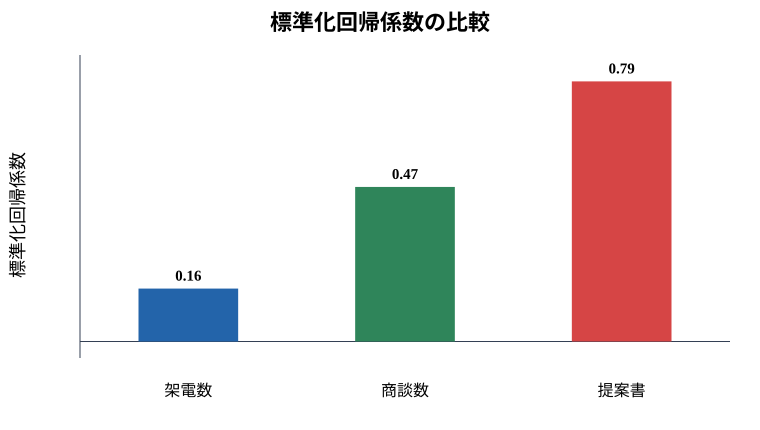
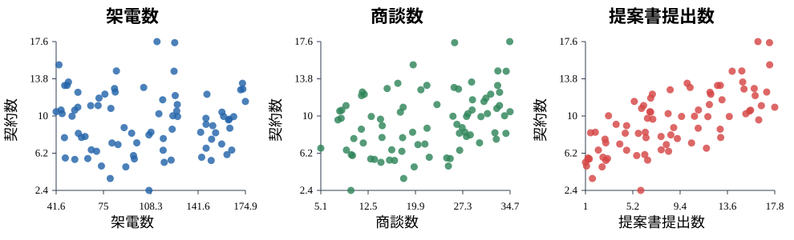

2. 標準化回帰係数
この資料の具体例
この資料では、営業活動と契約数を例にします。
営業マネージャーが、契約数と関係しそうな活動として次の3つを見ているとします。
- 架電数
- 商談数
- 提案書提出数
どれも大事そうですが、単位が違います。架電は月100件以上あるかもしれませんが、提案書提出は月数件かもしれません。
このようなとき、普通の回帰係数だけを見ると、「どの活動が契約数と強く関係しているのか」を比べにくいことがあります。
そこで使うのが、標準化回帰係数です。
A. 理論理解と説明
重回帰分析とは
説明変数が1つだけの回帰分析を単回帰分析といいます。
説明変数が複数ある回帰分析を重回帰分析といいます。
今回なら、次のような式です。
契約数 = a + b1 × 架電数 + b2 × 商談数 + b3 × 提案書提出数 + eこの式では、契約数を3つの活動量で説明します。
普通の回帰係数の意味
普通の回帰係数は、
その変数が1単位増えたとき、目的変数が平均的にどれだけ変わるかを表します。
たとえば、
架電数の係数 = 0.01
商談数の係数 = 0.40
提案書提出数の係数 = 0.80なら、提案書提出数の係数がいちばん大きく見えます。
しかし、架電数の「1件」と提案書提出数の「1件」は、営業プロセス上の重さが違います。単位の違うものをそのまま比べるのは危険です。
標準化とは
標準化とは、データを次の形に変換することです。
標準化した値 = (元の値 - 平均) / 標準偏差標準化すると、どの変数も次の状態になります。
- 平均が0
- 標準偏差が1
つまり、単位を消して、「平均からどれくらい離れているか」でそろえます。
標準化回帰係数の意味
標準化回帰係数は、
説明変数が1標準偏差増えたとき、目的変数が何標準偏差変わるかを表します。
たとえば、
架電数の標準化回帰係数 = 0.15
商談数の標準化回帰係数 = 0.35
提案書提出数の標準化回帰係数 = 0.50なら、契約数との関係は、提案書提出数が比較的大きく、次に商談数、架電数は小さめ、と読めます。
B. 実践: Rによるモデル構築
次のコードでは、契約数を架電数、商談数、提案書提出数で説明します。
set.seed(123)
n <- 80
calls <- runif(n, 40, 180)
meetings <- runif(n, 5, 35)
proposals <- runif(n, 1, 18)
contracts <- 0.5 +
0.01 * calls +
0.18 * meetings +
0.45 * proposals +
rnorm(n, 0, 1.5)
sales <- data.frame(contracts, calls, meetings, proposals)
model <- lm(contracts ~ calls + meetings + proposals, data = sales)
summary(model)標準化回帰係数を求めるには、目的変数と説明変数をすべて標準化してから回帰します。
sales_z <- as.data.frame(scale(sales))
model_z <- lm(contracts ~ calls + meetings + proposals, data = sales_z)
summary(model_z)この model_z の係数が、標準化回帰係数です。
C. サンプルデータによるシミュレーションと可視化
普通の回帰係数と標準化回帰係数を比べます。
coef(model)
coef(model_z)Rでは、標準化回帰係数を棒グラフにできます。
beta <- coef(model_z)[-1]
barplot(beta,
main = "標準化回帰係数の比較",
ylab = "標準化回帰係数",
col = c("steelblue", "darkgreen", "tomato"))
abline(h = 0)
この図は、「どの説明変数が相対的に大きく契約数と関係しているか」を見るためのものです。
散布図でも関係を見る
重回帰の結果は係数表だけでなく、各変数と契約数の散布図でも確認できます。
par(mfrow = c(1, 3))
plot(sales$calls, sales$contracts,
xlab = "架電数", ylab = "契約数",
main = "架電数と契約数", pch = 19)
plot(sales$meetings, sales$contracts,
xlab = "商談数", ylab = "契約数",
main = "商談数と契約数", pch = 19)
plot(sales$proposals, sales$contracts,
xlab = "提案書提出数", ylab = "契約数",
main = "提案書提出数と契約数", pch = 19)
par(mfrow = c(1, 1))
符号と大きさを分けて読む
標準化回帰係数を見るときは、符号と大きさを分けて考えます。
- プラス: その活動が多いほど契約数も多い傾向
- マイナス: その活動が多いほど契約数は少ない傾向
- 絶対値が大きい: 関係が比較的強い
- 絶対値が小さい: 関係が比較的弱い
ただし、標準化回帰係数は因果を証明しません。たとえば、提案書提出数と契約数の関係が強くても、「提案書をたくさん出せば必ず契約が増える」とは言えません。見込みの高い顧客ほど提案書まで進みやすい、という逆向きの関係もありえます。
Check
まとめテスト
標準化回帰係数を見る主な目的はどれですか？
標準化すると平均0・標準偏差1の尺度にそろうため、単位が違う変数同士を比較しやすくなります。